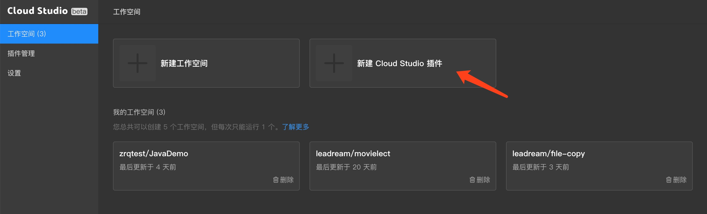
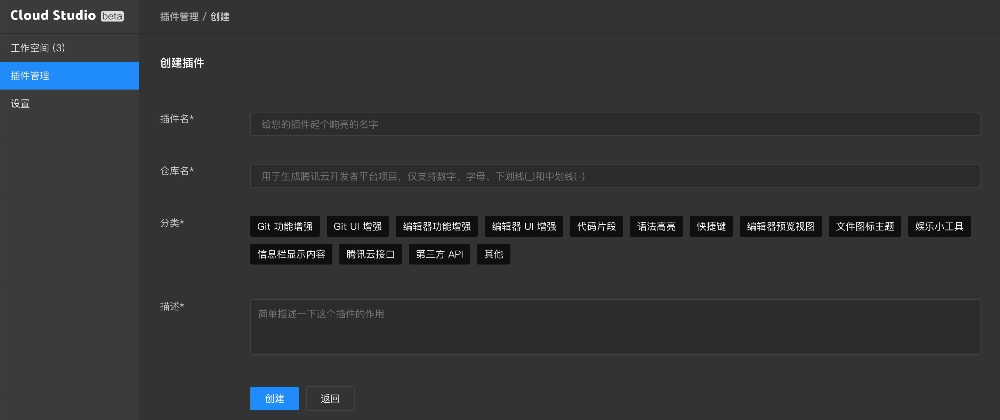
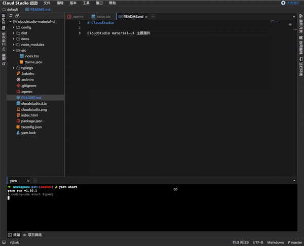
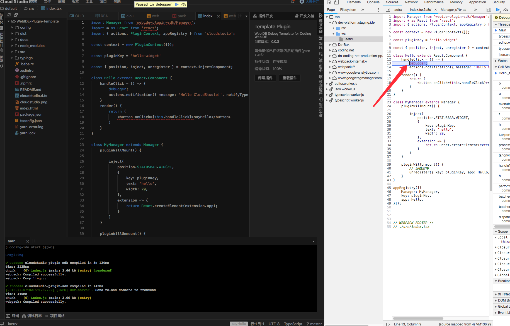

概览
Cloud Studio 是基于 Monaco Editor 以及 React 的在线 IDE（集成式开发环境）。它自带多种编程语言及运行环境支持，让开发者可以随时随地打开浏览器编写代码并运行代码。同时 Cloud Studio 开放了丰富的插件扩展系统，得益于 Monaco Editor 强大的扩展性，用户可以自行开发插件来提升使用体验。
创建一个插件
在 Cloud Studio 中，我们将一个项目称之为一个「工作空间」，插件也是一个工作空间。要创建插件，我们需要进入 Cloud Studio 控制台，点击「新建 Cloud Studio 插件」，进入插件创建页面。

在插件创建页面，你需要填写一些插件的基本信息：插件名、仓库名、分类和描述。
提示
创建插件的同时我们会为你同时创建一个腾讯云开发者平台项目，后续插件的发布依赖于该项目的代码，所以请不要随意删除该项目。

创建完成之后，就会进入该插件的工作空间。插件工作空间默认是 Nodejs (8.12.0版本)的环境，同时预装了 yarn (1.12.1版本)。可以看到，在右侧功能区有一个「插件开发」面板，你就可以在这里进行插件的开发和实时调试了。
文件结构
一个典型的插件文件目录如下：
.
├── README.md // 在这里编写插件文档
├── cloudstudio.d.ts
├── cloudstudio.png
├── cloudstudio.svg
├── config // 自定义 webpack 配置
│ ├── webpack.dev.config.js
│ └── webpack.production.config.js
├── index.html
├── package.json
├── src // 源代码目录
│ ├── index.ts
├── tsconfig.json
├── typings // CloudStudio 依赖项的类型声明文件
│ └── monaco.d.ts
└── yarn.lock
其中 src/index.tsx 是插件内置 webpack 的入口文件，在开发或发布时会被编译为可被浏览器执行的 Javascript。
一个最简单的插件入口文件可以是这样：
示例代码
import Manager from 'webide-plugin-sdk/Manager';
import * as React from 'react';
import { actions, PluginContext, appRegistry } from 'cloudstudio';
const context = new PluginContext({});
// 插件唯一 key
// 一定要确保代码中 pluginKey 的唯一性，推荐使用「开发者邮箱-昵称-插件名」的格式
const pluginKey = 'hello-widget';
const { position, inject, unregister } = context.injectComponent;
class Hello extends React.Component {
handleClick = () => {
actions.notification({ message: 'Hello Cloud Studio!', notifyType: 'INFO' });
}
render() {
return (
<button onClick={this.handleClick}>sayHello</button>
)
}
}
class MyManager extends Manager {
pluginWillMount() {
// 状态栏注入组件
inject(
position.STATUSBAR.WIDGET,
{
key: pluginKey,
},
extension => {
return React.createElement(extension.app);
}
)
}
pluginWillUnmount() {
// 卸载组件
unregister({ key: pluginKey, app: Hello, position: position.STATUSBAR.WIDGET });
}
}
appRegistry([{
Manager: MyManager,
key: pluginKey,
app: Hello,
}]);
这段代码由四部分组成：一个 PluginContext 的实例、一个名为 HelloWorld 的 React 组件，一个 MyPluginManager 类，以及最后的插件注册方法 appRegistry，他们的作用如下：
PluginContext
PluginContext 负责初始化插件上下文，可以通过实例 context 读取已定义的国际化模块，同时还可以注册插件的 UI 主题。
HelloWorld
这是你可以自定义的一个 React 组件，它可以被注入到 Cloud Studio 界面中，实现用户交互。
MyPluginManager
MyPluginManager 继承自 webide-plugin-sdk 模块中的 Manager 基类，它负责管理插件的生命周期，你可以在里面处理插件的业务逻辑。
appRegistry
最后我们需要通过 appRegistry 来完成插件的注册
在这个示例代码中，HelloWorld 组件在插件装载时（pluginWillMount）我们调用 app 提供的 inject，将其注入到 Cloud Studio 界面中。其中 position.STATUSBAR.WIDGET 表示这个组件将在界面的何处显示，完整的 API 及详细使用方法可以查看界面注入文档。
要注意区分插件与组件在 Cloud Studio 插件系统中的区别，插件是一个独立的 JavaScript 模块，它具有调用 Cloud Studio API 的能力。而组件是可以被注入到 Cloud Studio 的一个可交互界面，在需要时你可以通过插件的能力注入组件，但是对于一些插件来说，它们不需要交互界面，譬如编辑器主题、代码高亮以及代码片段等，因此也就不需要编写组件代码了。
插件生命周期
由于使用热加载的缘故，插件生命周期不同于发布安装后，例如 pluginWillMount 在开发模式下会在插件被加载后执行一次，点击重载插件或热更新之后，会依次执行 pluginWillUnmout 卸载并清除插件副作用，并再次执行 pluginWillUnmount。而在插件发布并安装到工作空间时，pluginWillMount 会在所有已安装插件代码全部下载完毕后依次被执行。也就是说在开发模式下，插件生命周期的执行机制会导致出现一些意料之外的情况，例如注册编辑器的打开事件时，插件加载之前已经打开的编辑器并不会注册事件，这是已知的正常表现。未发布的插件在预发布模式下才会和已安装的插件同时加载并执行生命周期方法。
小贴士
你可以直接查看在模板项目中包含的 codingide.d.ts 类型声明文件来查找 API 定义。
提示
前文提到的 webide-plugin-sdk 模块是插件系统的底层模块，它包含了插件启动、打包以及在开发阶段为插件提供 HMR（模块热替换）功能的 dev-server，请勿修改 package.json 中原有的 npm scripts 配置，否则可能导致插件无法正常工作。
提示
一定要确保代码中 pluginKey 的唯一性，Cloud Studio 插件系统根据这个 key 来区分插件。例如 A 插件与 B 插件的 key 相同，那么同时安装了两个插件以后，其中一个将会加载失败。所以 pluginKey 建议按照 开发者邮箱-昵称-插件名 的格式来编写。
实时调试
Cloud Studio 为插件开发提供了实时调试的功能，你可以在「插件开发」面板中查看当前状态。当你在开发插件时，需要先在终端安装依赖：
yarn
再启动实时调试模式：
yarn start
这将会在插件项目中启动一个简易的 webpack-dev-server。等待启动成功后，点击插件开发面板中的「加载插件」按钮，此时 Cloud Studio 将会连接之前启动的 dev-server，并开始提供 远程 HMR 功能。随后当前开发的这个插件就会在工作空间内加载并启动。如同在传统编辑器中开发前端项目一样，每次修改源码并保存时，dev-server 内置的 webpack 将会立即编译代码，编译完成后会将新的代码加载到当前工作空间，此时无需刷新浏览器即可查看插件的效果。

提示
远程 HMR 无法有效的处理副作用，例如当组件中通过原生 DOM API 绑定的一些事件，如果没有在组件卸载时解除绑定，热更新以后会重复绑定事件，又或者插件注册了快捷键、菜单、主题等对 Cloud Studio 界面或命令系统进行修改的行为，Cloud Studio 无法区分这些行为是来自于插件还是 Cloud Studio 自身，所以在热更新之后也会重复注册。要避免这种情况，需要在组件 componentWillUnmount 或者插件 Manager 的 pluginWillUnmount 生命周期中解绑这些事件及插件注册模块。Cloud Studio 插件系统的部分具有注册行为的 API 会返回相应的清除函数 IDisposable，组件或插件卸载时记得调用这些函数清除已经注册的模块。
开发模式下默认开启了 webpack 的 eval-sourcemap，在插件源代码中添加断点，即可在浏览器开发者工具中看到编译前的源代码，方便调试。

推送到远端仓库
如果你的插件在实时调试时各项功能正常，就可以发布到插件市场了，不过在此之前，请一定要将你的代码 push 到远端仓库。这是因为，当你发布插件的时候，我们会根据这个插件对应的仓库（一个腾讯云开发者平台项目）的最新代码来构建你的插件。删除该项目或代码未推送过来会导致构建失败或异常，影响您的发布。
发布你的插件
如果你已经完成插件开发，想要将其发布到插件中心供所有用户安装，就可以前往 Cloud Studio 控制台发布插件。
我们提供了两种插件发布方式——「预发布」和「正式发布」。「预发布」是指在你自己的所有工作空间开启该插件，无需审核，其他用户也不会再插件中心看到。你可以前往控制台我开发的插件页面中，点击设置进入插件设置页面，再选择「预发布」来预发布当前版本。
如果你的插件在所有工作空间中都能正常运行，可以将其正式发布到插件市场，供所有用户安装使用。前往控制台我开发的插件页面中，点击设置进入插件设置页面，再选择「正式发布」，填写插件的版本号就可以正式发布了。
WARNING
请注意，预发布或发布之前你需要将代码推送到项目仓库中，我们会根据当前 master 分支最新的代码进行编译打包发布。
发布之后，我们会在后台审核你的插件，审核通过之后就可以在插件市场看到啦。